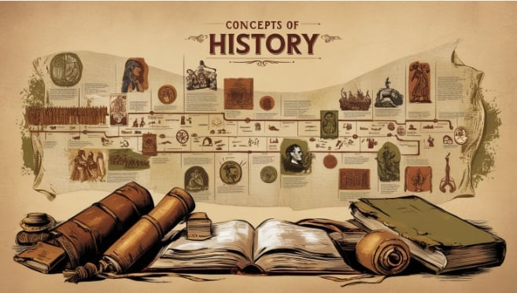

giới thiệu chung về môn lịch sử
I. Giới thiệu chung về môn Lịch sử
1.Lịch sử là môn học gì?
Môn Lịch sử (Subject): Là môn học nghiên cứu có hệ thống về quá khứ, giúp tìm hiểu về cội nguồn dân tộc, sự phát triển của đất nước và thế giới, rút ra bài học kinh nghiệm, phát triển tư duy logic và giáo dục lòng yêu nước. 
2.Vai trò của môn Lịch sử trong giáo dục
- Giáo dục nhân cách: Bồi dưỡng tinh thần yêu nước, lòng tự hào dân tộc, giúp học sinh hiểu về truyền thống cha ông.
- Hiểu biết toàn cầu: Mở rộng kiến thức lịch sử thế giới, khu vực, giúp học sinh trở thành công dân toàn cầu.
- Giúp học sinh nhận thức và vận dụng được các bài học lịch sử giải quyết những vấn đề của thực tế cuộc sống.
3.Vì sao học sinh nên học môn Lịch sử?
- Hiểu cội nguồn, yêu quê hương: Để biết "tường gốc tích nước nhà Việt Nam", hiểu rõ quá trình dựng nước và giữ nước.
- Học kinh nghiệm từ những người đi trước: Rút ra bài học từ thành công và thất bại trong quá khứ để xây dựng hiện tại và tương lai tốt đẹp hơn.
- Xây dựng bản sắc, trách nhiệm: Tự hào về truyền thống, có ý thức trách nhiệm với sự phát triển của đất nước.
II. Các giai đoạn lịch sử
1.Thời kỳ dựng nước
a. Từ khoảng thế kỉ VII TCN đến thế kỉ III TCN
- Nội dung: Hình thành các nhà nước đầu tiên là Văn Lang và Âu Lạc; cư dân Việt cổ phát triển nông nghiệp lúa nước, đời sống xã hội và văn hóa dần ổn định.
- Ý nghĩa: Đặt nền móng cho sự ra đời của quốc gia và dân tộc Việt Nam.
b. Từ cuối thế kỉ II TCN đến thế kỉ I
- Nội dung: Nước ta bị các triều đại phong kiến phương Bắc đô hộ; nhân dân chịu nhiều áp bức, bóc lột.
- Ý nghĩa: Hình thành ý thức đấu tranh và bảo vệ bản sắc dân tộc.
c. Từ thế kỉ I đến thế kỉ X
- Nội dung: Liên tiếp nổ ra các cuộc khởi nghĩa chống ách đô hộ như Hai Bà Trưng, Bà Triệu, Lý Bí, Mai Thúc Loan…
- Ý nghĩa: Hun đúc tinh thần yêu nước, tạo tiền đề cho việc giành lại độc lập, mở ra thời kỳ tự chủ từ thế kỉ X.
2.Thời phong kiến
a. Từ thế kỉ X đến thế kỉ XV
- Nội dung: Việt Nam giành được độc lập, xây dựng nhà nước phong kiến tự chủ qua các triều đại Ngô, Đinh, Tiền Lê, Lý, Trần, Hồ, Lê sơ. Đất nước ổn định, kinh tế nông nghiệp phát triển, nhiều chiến thắng chống ngoại xâm (Tống, Nguyên – Mông, Minh).
- Ý nghĩa: Đánh dấu thời kỳ phát triển mạnh mẽ của quốc gia phong kiến độc lập, khẳng định chủ quyền và bản lĩnh dân tộc.
b. Từ thế kỉ XVI đến thế kỉ XVIII
- Nội dung: Xã hội phong kiến rơi vào khủng hoảng, đất nước bị chia cắt (Nam – Bắc triều, Trịnh – Nguyễn). Nhiều phong trào nông dân nổ ra, tiêu biểu là phong trào Tây Sơn.
- Ý nghĩa: Phản ánh mâu thuẫn xã hội sâu sắc, tạo tiền đề cho sự thay đổi và thống nhất đất nước.
c. Từ cuối thế kỉ XVIII đến giữa thế kỉ XIX
- Nội dung: Nhà Tây Sơn và sau đó là nhà Nguyễn được thành lập; đất nước thống nhất nhưng chính sách bảo thủ, lạc hậu, làm suy yếu quốc gia.
- Ý nghĩa: Cho thấy sự suy thoái của chế độ phong kiến, mở đường cho các biến động lớn trong lịch sử Việt Nam sau này.

3.Thời cận – hiện đại
a. Giai đoạn 1858 – 1945: Chống thực dân Pháp
- Nội dung: Thực dân Pháp xâm lược Việt Nam (1858), nhân dân ta liên tục đấu tranh chống ách đô hộ. Đỉnh cao là Cách mạng tháng Tám năm 1945, thành lập nước Việt Nam Dân chủ Cộng hòa.
- Ý nghĩa: Chấm dứt chế độ thực dân – phong kiến, mở ra kỷ nguyên độc lập dân tộc và nhân dân làm chủ đất nước.
b. Giai đoạn 1945 – 1975: Kháng chiến và thống nhất đất nước
- Nội dung: Tiến hành kháng chiến chống Pháp (1946–1954) và chống Mỹ (1954–1975). Kết thúc bằng Chiến dịch Hồ Chí Minh, đất nước được thống nhất.
- Ý nghĩa: Hoàn thành sự nghiệp giải phóng dân tộc, thống nhất Tổ quốc, khẳng định ý chí kiên cường của dân tộc Việt Nam.
c. Giai đoạn 1975 – nay: Xây dựng và phát triển đất nước
- Nội dung: Cả nước đi lên Chủ nghĩa Xã hội, thực hiện công cuộc Đổi mới từ năm 1986 và đẩy mạnh hội nhập quốc tế.
- Ý nghĩa: Đưa đất nước từng bước phát triển, nâng cao đời sống nhân dân và vị thế của Việt Nam trên trường quốc tế.
III. Nhân vật lịch sử tiêu biểu
1.Hai Bà Trưng (Trưng Trắc – Trưng Nhị)
- Năm sinh: Chưa rõ (khoảng cuối thế kỉ I TCN)
- Năm mất: Năm 43
- Quê quán: Mê Linh (nay thuộc Hà Nội)
- Thành tựu – công lao:
- Lãnh đạo khởi nghĩa Hai Bà Trưng (năm 40)
- Đánh đuổi ách đô hộ nhà Hán
- Giành và giữ độc lập gần 3 năm (40–43)
- Trưng Trắc lên làm vua, đóng đô ở Mê Linh
2.Võ Thị Sáu
- Năm sinh: 1933
- Năm mất: 1952
- Quê quán: Đất Đỏ, Bà Rịa – Vũng Tàu
- Thành tựu – công lao:
- Nữ chiến sĩ cách mạng trong kháng chiến chống Pháp
- Tham gia đội công an xung phong, tiêu diệt địch
- Bị thực dân Pháp xử bắn khi mới 19 tuổi
- Là anh hùng liệt sĩ, biểu tượng của tuổi trẻ yêu nước Việt Nam
3.Bà Triệu (Triệu Thị Trinh)
- Năm sinh: 226
- Năm mất: 248
- Quê quán: Huyện Nông Cống, tỉnh Thanh Hóa
- Thành tựu – công lao:
- Lãnh đạo khởi nghĩa chống ách đô hộ nhà Ngô (năm 248)
- Làm rung chuyển chính quyền đô hộ phương Bắc
- Trở thành biểu tượng anh hùng, ý chí quật cường của phụ nữ Việt Nam
4.Chủ tịch Hồ Chí Minh
- Năm sinh – mất: 1890 – 1969
- Quê quán: Kim Liên, Nam Đàn, Nghệ An
- Thành tựu:
- Tìm ra con đường cứu nước theo chủ nghĩa Mác – Lênin
- Thành lập Đảng Cộng sản Việt Nam (1930)
- Lãnh đạo Cách mạng Tháng Tám 1945
- Khai sinh nước Việt Nam Dân chủ Cộng hòa
- Lãnh đạo kháng chiến và sự nghiệp xây dựng đất nước
5.Phan Bội Châu
- Năm sinh – mất: 1867 – 1940
- Quê quán: Nam Đàn, Nghệ An
- Thành tựu:
- Lãnh đạo phong trào yêu nước đầu thế kỷ XX
- Khởi xướng Phong trào Đông Du
- Góp phần thức tỉnh tinh thần yêu nước và mở đường cho phong trào giải phóng dân tộc
6.Phan Châu Trinh
- Năm sinh – mất: 1872 – 1926
- Quê quán: Tam Kỳ, Quảng Nam
- Thành tựu:
- Nhà tư tưởng tiến bộ, chủ trương cải cách ôn hòa
- Khởi xướng Phong trào Duy Tân
- Cổ vũ dân chủ, tự do, nâng cao dân trí và cải cách xã hội
IV. Sự kiện lịch sử nổi bật
Việt Nam đã trải qua nhiều cột mốc quan trọng để bảo vệ nền độc lập. Dưới đây là dòng thời gian các sự kiện tiêu biểu nhất:
(Hình ảnh)
V. Ý nghĩa của việc học Lịch sử
Học lịch sử có nhiều ý nghĩa quan trọng:
- Hiểu rõ về quá khứ: Giúp chúng ta biết được những gì đã xảy ra trước đây, từ đó rút ra bài học kinh nghiệm.
- Biết nguồn gốc và văn hóa: Giúp chúng ta hiểu về nguồn gốc, văn hóa và truyền thống của dân tộc mình.
- Phát triển tư duy: Giúp phát triển tư duy phản biện, phân tích và đánh giá sự kiện.
- Tự hào và yêu nước: Giúp chúng ta thêm tự hào về dân tộc và yêu nước hơn.
Một số ý nghĩa khác của việc học lịch sử:
- Học hỏi từ sai lầm: Giúp chúng ta học hỏi từ những sai lầm và thành công của người đi trước.
- Phát triển kỹ năng: Giúp phát triển kỹ năng nghiên cứu, phân tích và trình bày thông tin.
- Hiểu về thế giới: Giúp chúng ta hiểu về thế giới và các sự kiện quốc tế.
VI. Hình ảnh – tư liệu lịch sử
https://docs.google.com/document/d/1jJjw7G_Hw6BgvF7xljEqaAYNkIG-wCzOgEuKg-DJ6z0/edit?usp=sharing
VII. Các trang web cung cấp tài liệu tham khảo
1.Tài liệu gốc & Lưu trữ (Độ tin cậy cao nhất)
- Archives.org.vn: Website của Cục Lưu trữ Quốc gia (Châu bản, Mộc bản triều Nguyễn, hồ sơ kháng chiến).
- Nlv.gov.vn: Thư viện Quốc gia Việt Nam (Báo chí cũ, sách Hán Nôm và tài liệu số hóa).
- Vass.gov.vn: Viện Hàn lâm Khoa học xã hội (Các công trình nghiên cứu và khảo cổ).
2.Kiến thức tổng hợp & Nghiên cứu
- Sugia.vn: Chuyên trang của Hội Khoa học Lịch sử Bình Dương, bài viết có tính chuyên môn sâu.
- Tạp chí Phương Đông: Phân tích lịch sử chính trị, quân sự và văn hóa Việt Nam.
- History.com: Nguồn tiếng Anh tốt nhất về lịch sử thế giới (trực quan, có video).
3.Trực quan & Phim tư liệu
- British Pathé (Youtube): Kho phim tư liệu thực tế về các sự kiện thế kỷ 20 trên toàn cầu.
- Đuốc Mồi (Youtube): Diễn họa lịch sử Việt Nam bằng hoạt hình sinh động, dễ tiếp cận cho người mới.